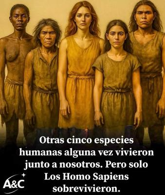

A pesar de los avances colosales de la ciencia, aún hay quienes creen —o quieren que sus hijos crean— que toda la humanidad desciende de una sola pareja humana creada por «Dios» hace sólo unos miles de años. Según ese mito, ambos fueron diseñados «a imagen y semejanza» de su creador, ya completos, pensantes y moralmente responsables. Sin embargo, la ciencia nos muestra una realidad que es muchísimo más fascinante y menos antropocéntrica: la humanidad no nació de un acto de magia divino, sino de un proceso evolutivo muy largo, complejo y profundamente azaroso.


La evidencia científica nos demuestra que hace apenas unos cientos de miles de años, la Tierra no era el hogar de una sola especie de «humanos», sino de un verdadero mosaico de linajes. Los Homo neanderthalensis (neandertales) habitaban Europa y Asia occidental; los Denisova hominin (denisovanos) prosperaban en Asia; mientras que en el sudeste asiático vivían los diminutos Homo floresiensis en la isla de Flores, y el Homo luzonensis en Filipinas. Y todos ellos coexistieron durante largos períodos, compartiendo paisajes, cazando presas semejantes, compitiendo, y hasta cruzándose entre sí.
Pero, ¿qué crees? Tampoco los Homo sapiens fuimos los primeros. Nuestra especie apareció en África hace unos 300.000 años (según fósiles de Jebel Irhoud, Marruecos); pero cuando surgimos, ya coexistían otras especies humanas. De hecho, hace sólo unos 100.000 años, el planeta era compartido por al menos seis linajes diferentes:
Homo sapiens (África)
Homo neanderthalensis (Europa y Asia occidental)
Denisovanos (Asia oriental)
Homo floresiensis (Indonesia)
Homo luzonensis (Filipinas)
Posiblemente Homo erectus (Asia oriental)
Sin embargo, la primera especie humana fue probablemente el Homo habilis, siendo el Homo sapiens más bien la última especie humana en aparecer. Pero en todo caso, varias especies coexistieron durante miles de años, compartiendo el planeta e incluso cruzándose entre sí. Hasta que hace unos 40 mil años desaparecen los demás, quedando sólo nosotros.
De hecho, nosotros mismos —los Homo sapiens— somos el resultado de esa red de mezclas. Las personas que hoy viven fuera de África conservan en su genoma entre un 1 y un 4 % de ADN neandertal, y ciertos pueblos de Oceanía llevan también porciones de ADN denisovano. Es decir, llevamos en nuestro cuerpo rastros genéticos de otras humanidades ya extinguidas. Porque la evolución humana no fue jamás una secuencia ordenada en la que una especie sustituía a la anterior sin ningún contacto: fue una red viva y cambiante, con ramas que divergían, se cruzaban o desaparecían.
Y sin embargo, de toda esa diversidad sólo quedó una: la nuestra. ¿Por qué? No hay un único motivo. Influyeron factores ecológicos, demográficos y culturales; nuestra capacidad de adaptación, de cooperación y de innovación tecnológica jugó un papel importante. Pero, por encima de todo, hubo un componente de azar. Cambios climáticos, migraciones, catástrofes naturales y simples coincidencias pudieron inclinar la balanza. En otro escenario, con un clima diferente o con otra especie expandiéndose más rápido, tal vez serían los neandertales o los denisovanos quienes estarían escribiendo ahora su historia —y quizá negando nuestra existencia.
Es, por tanto, sumamente fortuito que los humanos actuales existamos. Si el meteorito que aniquiló a los dinosaurios no hubiera caído, si una glaciación hubiese sido más prolongada, si una sequía hubiera reducido nuestras poblaciones ancestrales, tal vez jamás habríamos aparecido sobre la faz de la Tierra, o quizás nos habríamos extinguido muy rápidamente casi sin dejar rastros. Porque nunca ha habido ningún plan, ni propósito, ni un destino: sólo una serie de contingencias naturales que nos condujeron, casi por casualidad, a ser lo que somos.
Y ante este panorama, la idea de que toda la humanidad desciende de un «Adán» y una «Eva» creados por un «Dios» omnipotente, resulta no sólo ingenua, sino intelectualmente insultante. Negar la evidencia fósil y genética en favor de un relato mitológico de Oriente Medio, es negarse a aceptar nuestra verdadera historia: la de una especie que emergió lentamente, no de la nada, sino del mismo proceso evolutivo que produjo todas las demás formas de vida.
Pero lo más preocupante no es que existan quienes aún creen en ese mito; lo escandaloso es que los sistemas educativos de tantos países sigan sin enseñar con la claridad que merece, que somos el fruto de millones de años de evolución. Que aún haya autoridades temerosas de ofender sensibilidades religiosas, dispuestas a equiparar el conocimiento científico con las fábulas de la antigüedad, es una muestra de cuán anclada sigue la humanidad al pensamiento mágico.
Ahora es cuando el creacionismo debería estar en los museos, no en las aulas. Porque con el nivel de conocimiento que hoy poseemos, pretender introducir mitos creacionistas en la educación moderna es tan absurdo, como enseñar astrología con la misma categoría académica que la astronomía. Después de todo, la ciencia no destruye la espiritualidad humana; la eleva, porque nos muestra la grandeza del azar y la fragilidad de nuestra existencia.
En última instancia, reconocer que somos el producto de millones de años de evolución y de innumerables coincidencias cósmicas no nos hace menos valiosos: nos hace más conscientes, más humildes, más responsables. Porque entender que nuestra presencia en este planeta es el resultado fortuito de una cadena de sucesos improbables, debería inspirarnos, no a rezar, sino a cuidar con inteligencia y gratitud el único mundo que tenemos.
[Godless Freeman]
Fuente: Smithsonian Institution / Nature
Comentarios
Comments powered by Disqus